Machine Learning-based Prediction of Elastic Modulus for High Entropy Alloys
Predict elastic modulus (Young's Modulus) of High Entropy Alloys (HEA) using machine learning
| Source | Data Points |
|---|---|
| DOE/OSTI | 107 |
| Gorsse Dataset | 211 |
| Latest Research | 4 |
| Total | 322 |
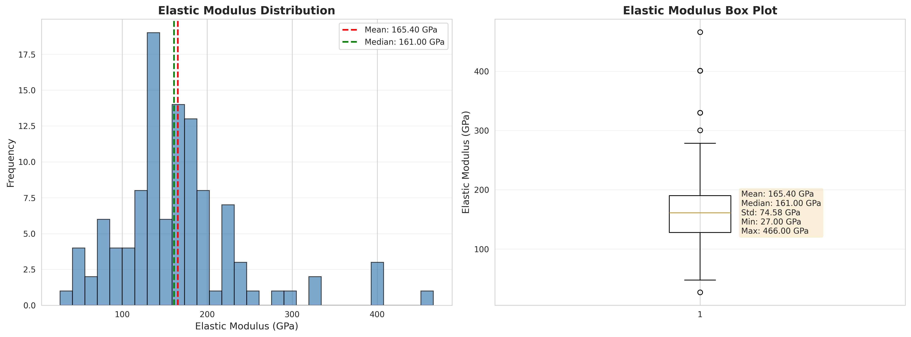
| Rank | Feature | Importance |
|---|---|---|
| 1st | Ti Composition | 16.6% |
| 2nd | Mean Electronegativity | 8.8% |
| 3rd | Valence Electron Concentration | 8.0% |
| 4th | Co Composition | 6.8% |
| 5th | Density | 6.4% |
Key Finding: Ti composition is the most important predictive factor
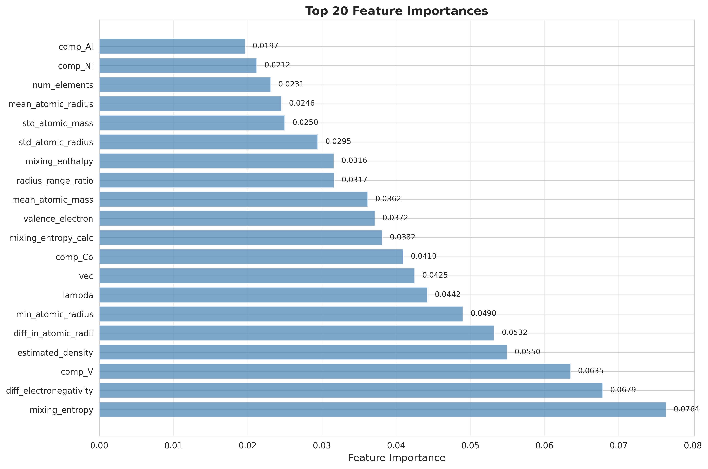
| Rank | Model | R² | RMSE |
|---|---|---|---|
| 1st | Random Forest | 0.57 | 37.5 GPa |
| 2nd | MLFFNN | 0.49 | 40.5 GPa |
| 3rd | Lasso | 0.37 | 45.1 GPa |
| 4th | Linear | 0.36 | 45.5 GPa |
| 5th | SVR | 0.36 | 45.6 GPa |
Best: Random Forest (R² = 0.57)
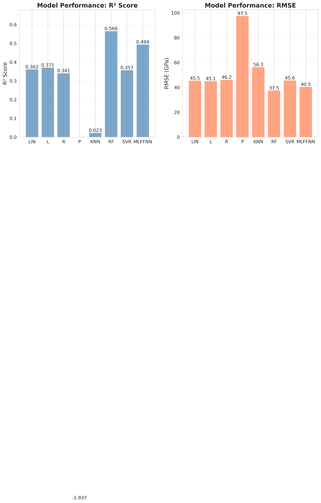
Conclusion: Significant performance improvement achieved through optimization
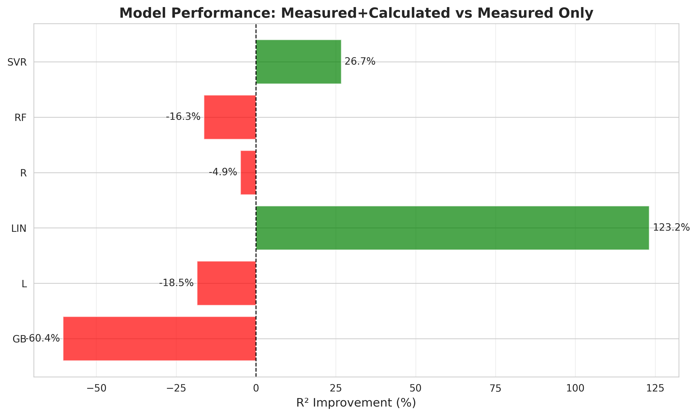
| Stage | R² | Improvement |
|---|---|---|
| Initial | 0.49 | - |
| Basic Optimization | 0.62 | +25.9% |
| Advanced Optimization | 0.63 | +27.6% |
| Final Optimization | 0.67 | +36.7% |
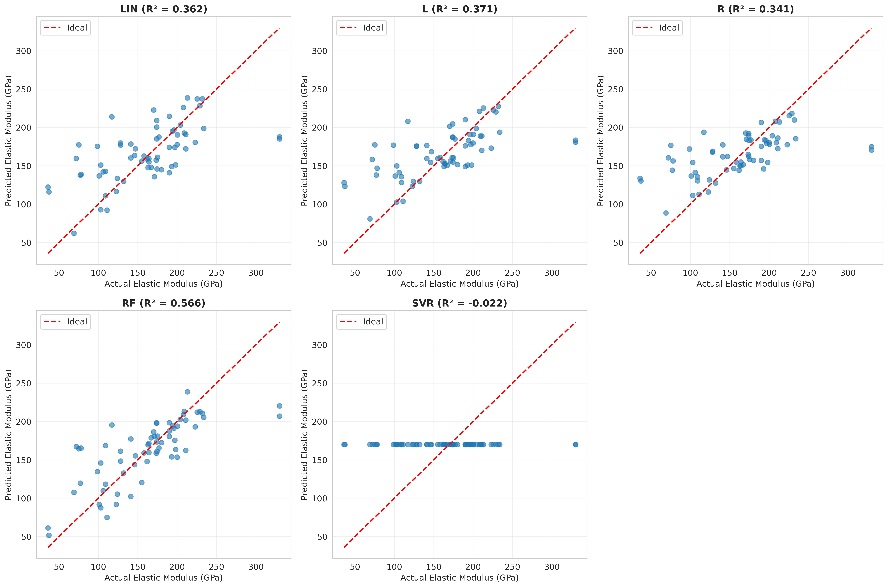
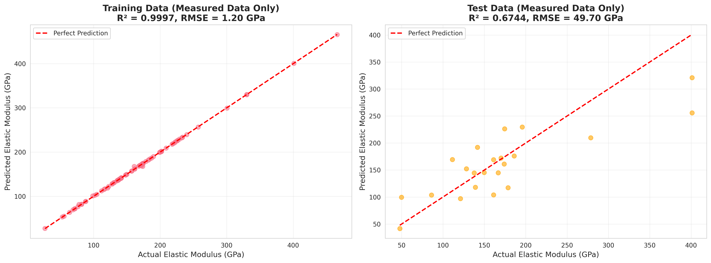
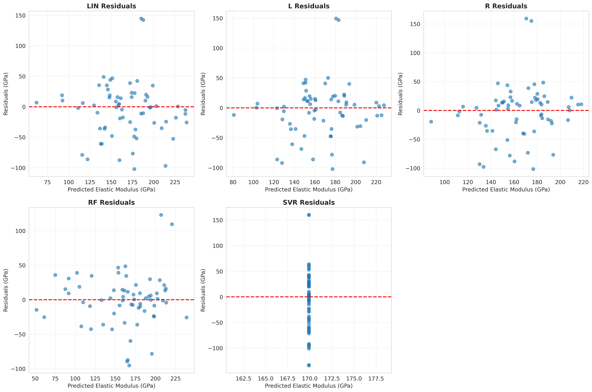
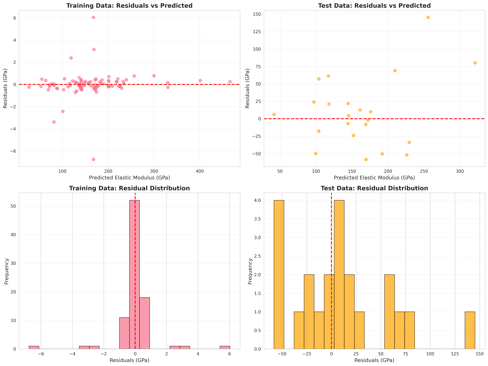
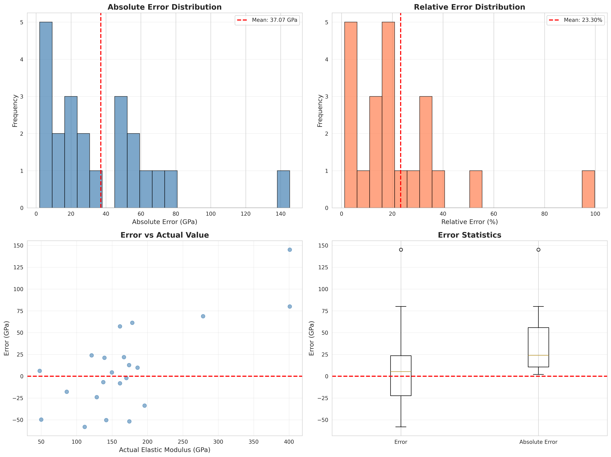
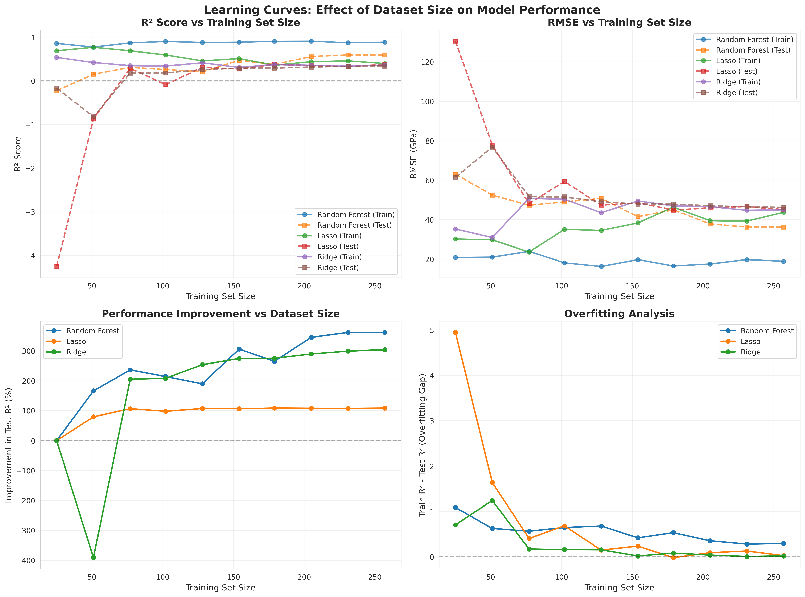
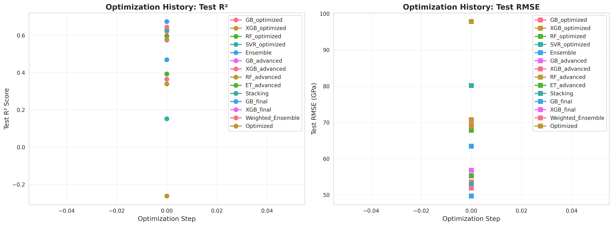
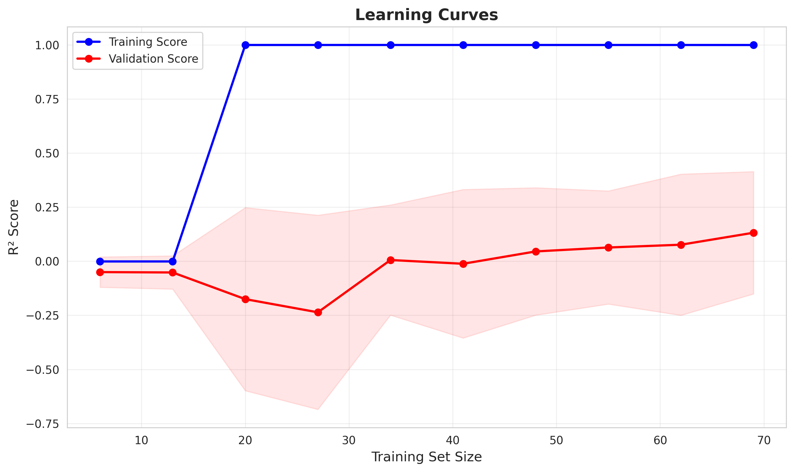
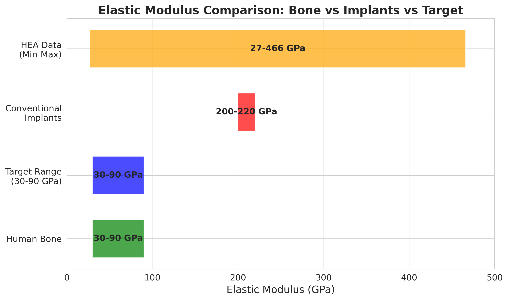
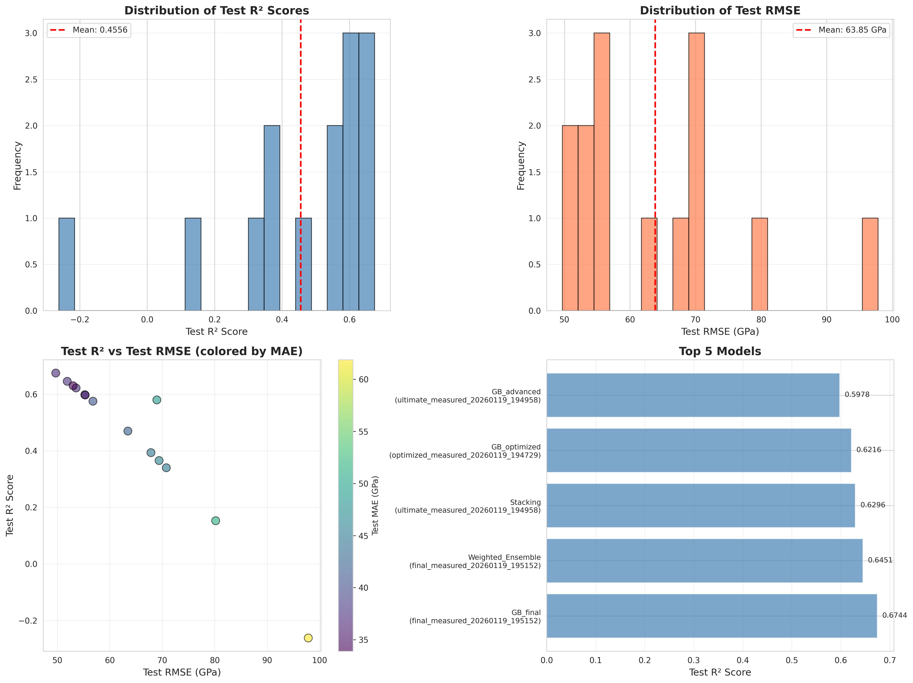
HEA Elastic Modulus Prediction Project - Presentation
Created: January 20, 2026